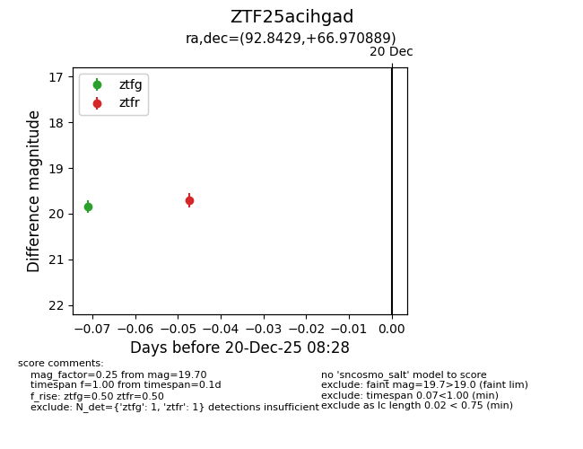
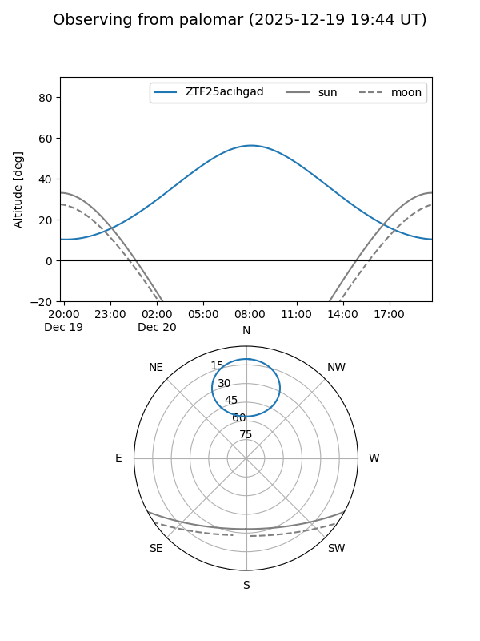

ZTF25acihgad
Target ZTF25acihgad at 2025-12-20 08:29
Aliases and brokers:
FINK: fink-portal.org/ZTF25acihgad
Lasair: lasair-ztf.lsst.ac.uk/objects/ZTF25acihgad
ALeRCE: alerce.online/object/ZTF25acihgad
alt names
ZTF25acihgad (ztf,fink_ztf)
Coordinates:
equatorial (ra, dec) = 92.8429,+66.97089
equatorial (HMS+DMS) = 06:11:22.30,+66:58:15.20
galactic (l, b) = (147.3106,+21.04420)
Flags:
Photometry:
last ztfg=19.84, ztfr=19.70
1 ztfg, 1 ztfr detections
Lightcurve

Visibility


Additional plots